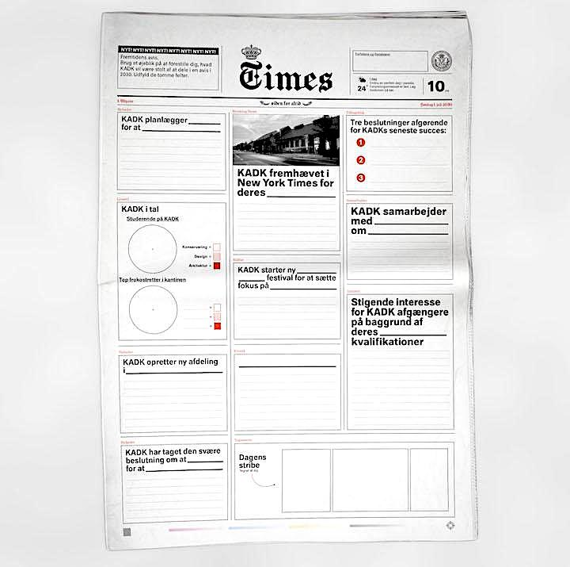
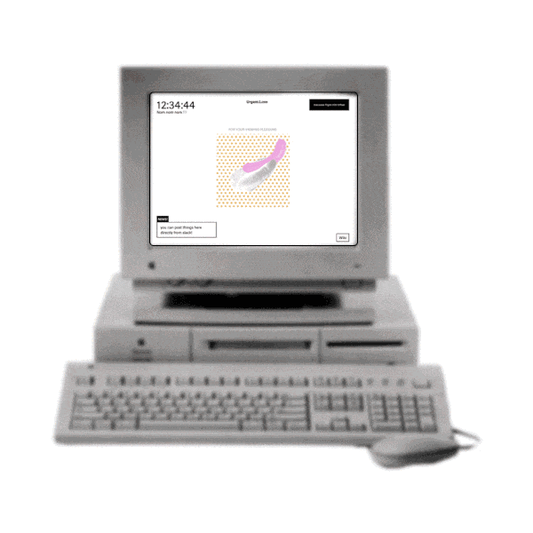

Urgent.Agency
Aug - Nov 2019
Roles
Brand Strategy
Web Development
Visual Design
Tools
After Effects
Sketch
code
Fun Fact
In my last week, I organized a team Iron Chef competition for our annual Strategy Trip.
Design and Research Strategist
Urgent.Agency is a small design studio in Copenhagen, Denmark focused on culture design, brand strategy, and placemaking. In short, I joined Urgent and the Nordic community broadly because of the rich craftsman design history of the area. I met some amazing experts in typography, wayfinding, brand strategy, and user research - all areas that I previously had almost 0 experience in.
What I focused on

Futures Lab Workshop
A newspaper template with fill-in-the-blanks to understand workshop participants' ideas for the future of a university's brand
Urgent.Website
An exploration into adding motion and interactivity to our studio website
Urgent.Journal
A brand-new blogging platform with a distinct editorial feel

Urgent.Dashboard
An internal productivity tool that changes interfaces every hour of the day
Some smaller projects
- Conducting user interviews at a large public instituition
- Researching new/modern formats for impact reporting
- Coding a storytelling site around climate change
- Proposing brand promises for an international hardware company
- Organizing an internal Iron Chef competition and bonding event